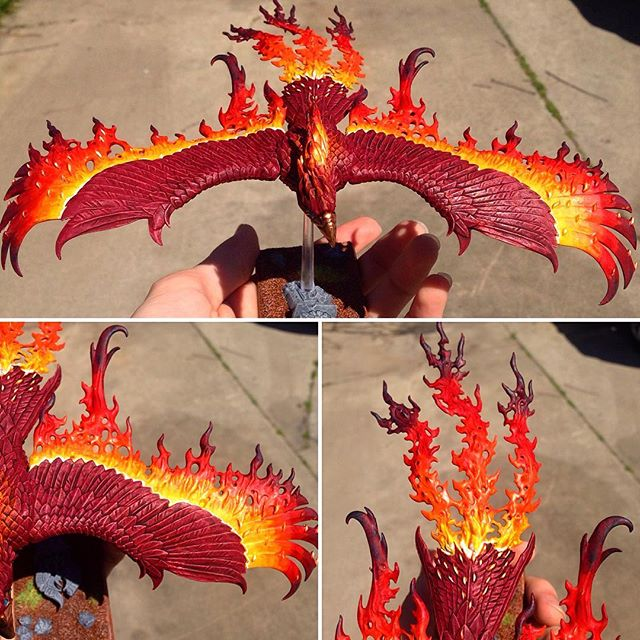

Where I Came From

This Flamespyre Phoenix is a sculpt from Citadel's Games Workshop for their Warhammer fantasy miniatures line. It was was painted over the course of one late evening as an anniversary gift and this one, like its predecessor, the Frostheart Phoenix, was intended to be used as a game piece for a game of my own design using warhammer miniatures and is part of my "Where I Came From" series. This piece employs lots of color blending and glazing techniques to create a gradient of color for the flames. This piece was created March 2017.